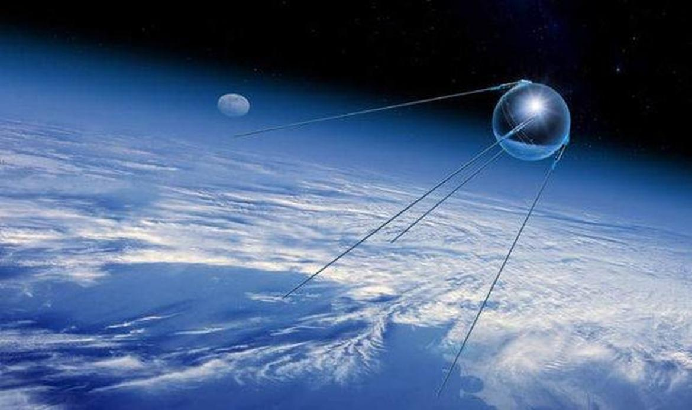
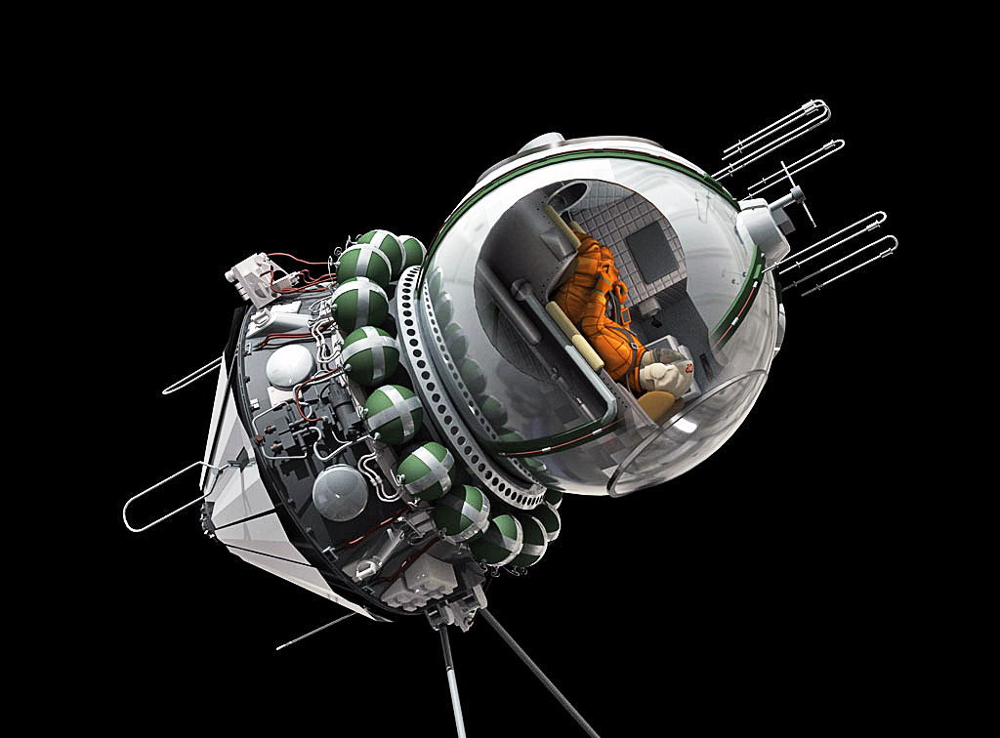
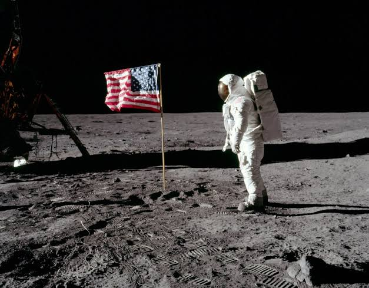
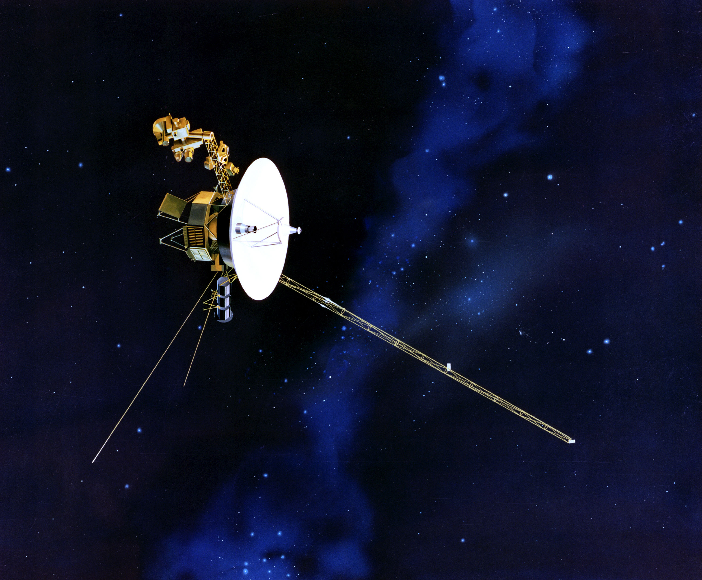
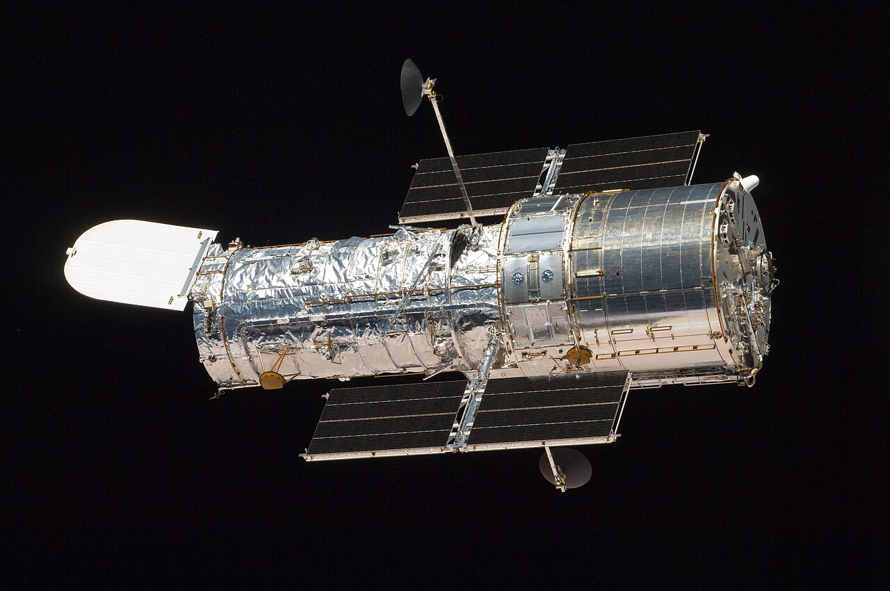
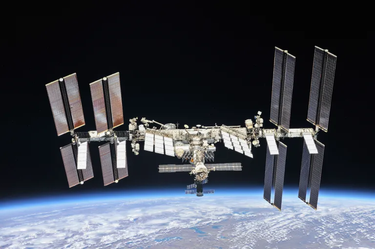
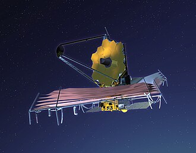

Fontosabb Űrmissziók
1957 Szputnyik-1
Az első mesterséges műhold.

Szputnyik-1 Részletek
A Szovjetunió által fellőtt gömb alakú műhold volt az első ember alkotta tárgy, amely Föld körüli pályára állt, elindítva az űrkorszakot.
1961 Vosztok-1
Az első ember az űrben.

Vosztok-1 Részletek
Jurij Gagarin szovjet űrhajós volt az első ember, aki kijutott a világűrbe és megkerülte a Földet a Vosztok-1 fedélzetén.
1969 Apollo 11
Az első Holdra szállás.

Apollo 11 Részletek
Neil Armstrong és Buzz Aldrin léptek először a Holdra. Ők voltak az első emberek, akik egy másik égitesten jártak.
1977 Voyager 1
Kutató szonda indítása.

Voyager 1 Részletek
Ez a szonda jutott a legmesszebbre a Földtől, már elhagyta a mi naprendszerünket is, és jelenleg is küld adatokat az csillagközi térből.
1990 Hubble távcső
Optikai űrtávcső Föld körüli pályán.

Hubble Részletek
Az egyik leghíresebb űrteleszkóp, amely több százezer lenyűgöző képet készített galaxisokról, ködökről és távoli bolygókról.
1998 Nemzetközi Űrállomás
Állandó kutatóbázis a Föld körül.

ISS Részletek
Több nemzet együttműködésével épült mikrogravitációs laboratórium, ahol 2000 óta folyamatosan élnek és dolgoznak űrhajósok.
2012 Curiosity rover
A Mars felszínének kutatása.
Curiosity Részletek
A NASA marsjárója a Gale-kráterben landolt, és bebizonyította, hogy a Marson egykor jelen lehettek az élet feltételei.
2021 James Webb
Új generációs űrtávcső.

James Webb Részletek
Az eddigi legfejlettebb infravörös űrtávcső, amely az univerzum legelső galaxisait és exobolygók légkörét vizsgálja.